SPSS-Style Plots
spss-plots.RmdOverview
The psych350lab package provides functions to create
plots that mimic the appearance of SPSS charts. This includes:
- A complete ggplot2 theme (
theme_SPSS()) - SPSS color palettes (
palette_SPSS(),scale_color_SPSS(),scale_fill_SPSS()) - Convenience functions for common chart types
(
spss_histogram(),spss_barchart())
Getting Started
library(psych350lab)
#> psych350lab v0.1.0 - Functions for Research Methods and Statistical Analysis Lab Course
library(ggplot2)
data(superman)SPSS Theme
Basic Usage
Apply theme_SPSS() to any ggplot2 plot:
ggplot(superman, aes(x = clark_height_in, y = rt_critics_score)) +
geom_point(color = "#1192E8", size = 3) +
labs(x = "Clark Height (inches)", y = "Critics Score") +
theme_SPSS()
#> Warning: Removed 3 rows containing missing values or values outside the scale range
#> (`geom_point()`).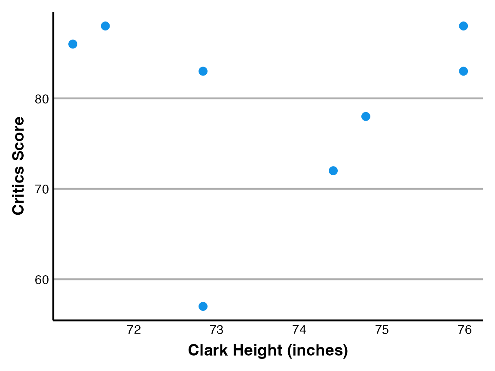
Modern vs Legacy Style
The theme supports two styles:
- Modern (default): White background, horizontal grid lines, no box border
- Legacy: Grey background, box border, no grid lines
ggplot(superman, aes(x = clark_height_in, y = rt_critics_score)) +
geom_point(color = "#3E58AC", size = 3) +
labs(x = "Clark Height (inches)", y = "Critics Score") +
theme_SPSS(version = "legacy")
#> Warning: Removed 3 rows containing missing values or values outside the scale range
#> (`geom_point()`).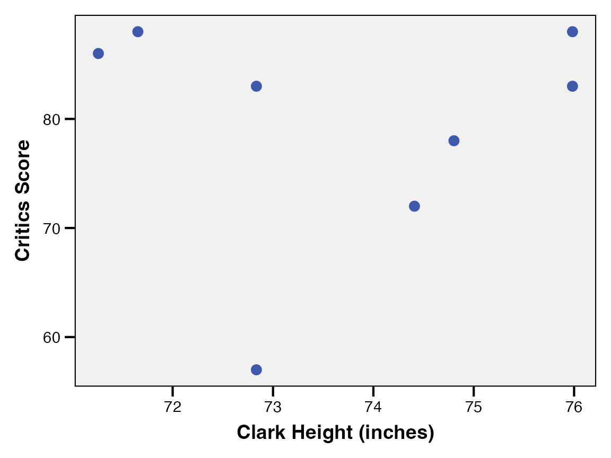
Discrete vs Continuous Scales
Adjust text sizing based on axis type:
ggplot(superman, aes(x = factor(clark_grp), y = rt_critics_score)) +
geom_boxplot(fill = "#1192E8", alpha = 0.7) +
labs(x = "Height Group", y = "Critics Score") +
theme_SPSS(scale.x = "discrete")
#> Warning: Removed 3 rows containing non-finite outside the scale range
#> (`stat_boxplot()`).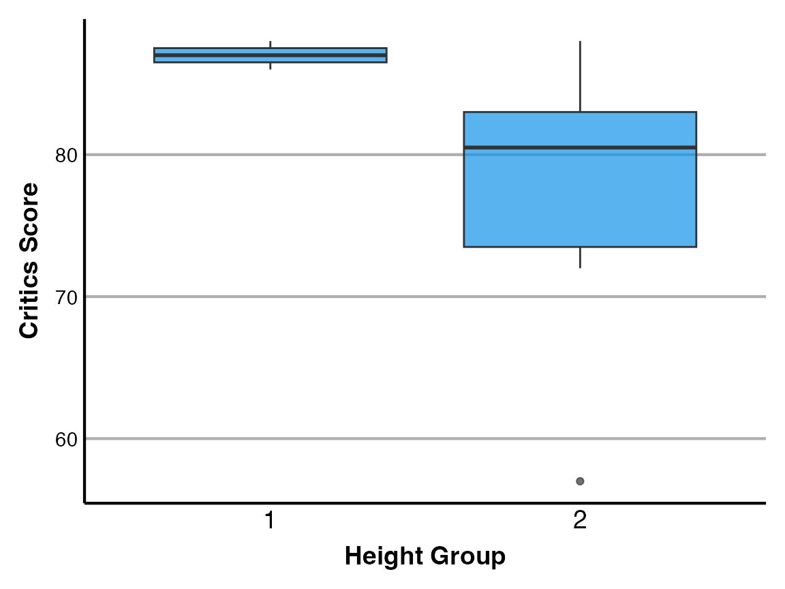
SPSS Color Palettes
Viewing the Palette
# Get first 8 colors from modern palette
palette_SPSS(8)
#> [1] "#1192E8" "#005D5D" "#9F1853" "#FA4D56" "#570408" "#198038" "#002D9C"
#> [8] "#EE538B"
# Get legacy palette colors
palette_SPSS(8, version = "legacy")
#> [1] "#3E58AC" "#2EB848" "#D3CE97" "#79287D" "#FBF873" "#EF3338" "#48C2C5"
#> [8] "#CCCCCC"Using with ggplot2
ggplot(superman, aes(x = rt_critics_score, y = rt_audience_score, color = factor(type))) +
geom_point(size = 3) +
scale_color_SPSS() +
labs(x = "Critics Score", y = "Audience Score", color = "Type") +
theme_SPSS()
#> Warning: Removed 3 rows containing missing values or values outside the scale range
#> (`geom_point()`).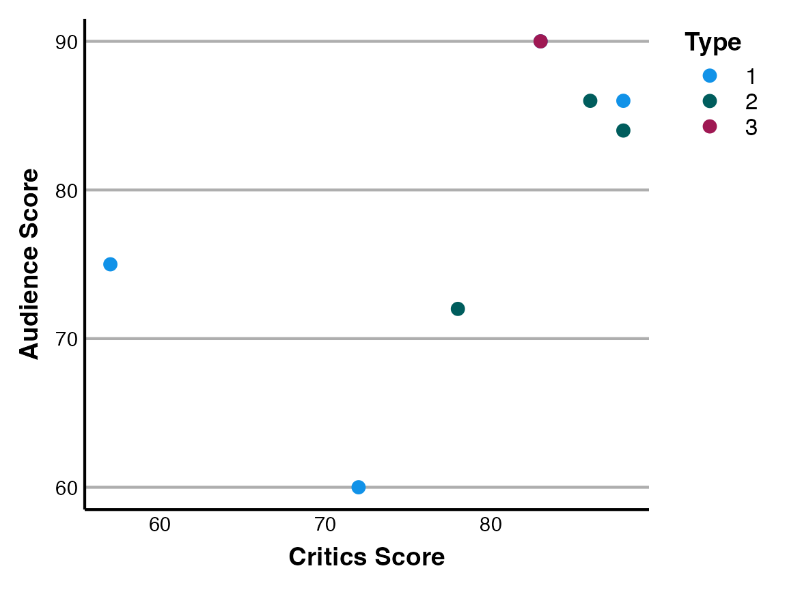
Fill Scale
ggplot(superman, aes(x = factor(type), fill = factor(type))) +
geom_bar() +
scale_fill_SPSS() +
labs(x = "Superman Type", y = "Count") +
theme_SPSS(scale.x = "discrete") +
theme(legend.position = "none")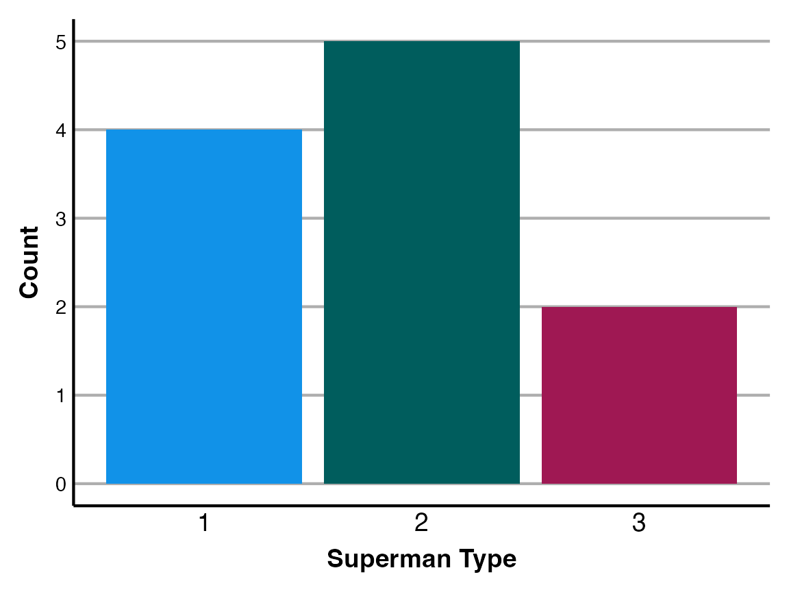
SPSS-Style Histogram
The spss_histogram() function creates a histogram
with:
- SPSS blue fill color
- Optional normal distribution overlay
- Mean, SD, and N annotation
spss_histogram(superman, "clark_height_in")
#> Warning in ggplot2::annotate("label", x = x_pos, y = y_pos, label =
#> stats_label, : Ignoring unknown parameters: `label.size`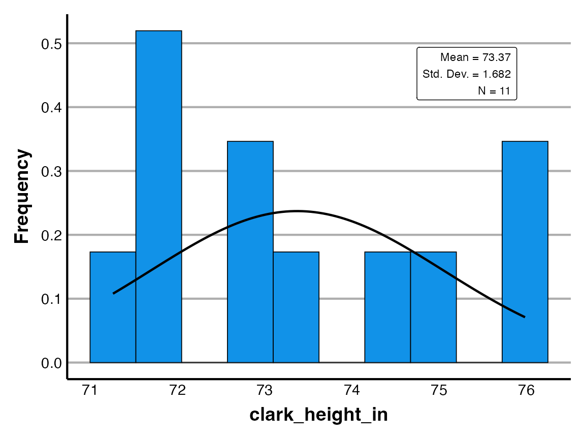
Customization Options
spss_histogram(
superman,
variable = "rt_critics_score",
bins = 15,
show_normal = TRUE,
show_stats = TRUE,
fill_color = "#005D5D",
version = "modern"
)
#> Warning in ggplot2::annotate("label", x = x_pos, y = y_pos, label =
#> stats_label, : Ignoring unknown parameters: `label.size`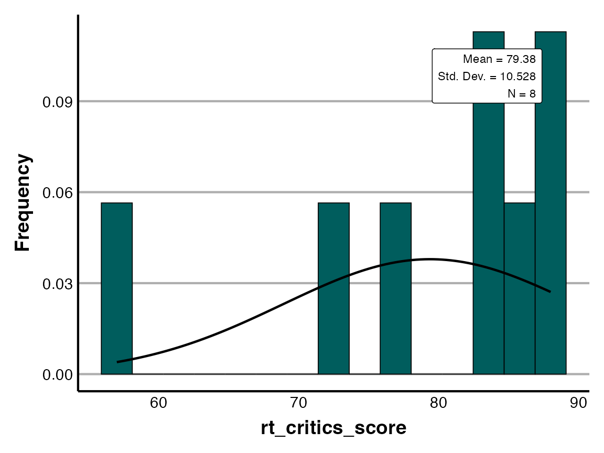
Without Normal Curve
spss_histogram(
superman,
variable = "rt_audience_score",
show_normal = FALSE,
show_stats = TRUE
)
#> Warning in ggplot2::annotate("label", x = x_pos, y = y_pos, label =
#> stats_label, : Ignoring unknown parameters: `label.size`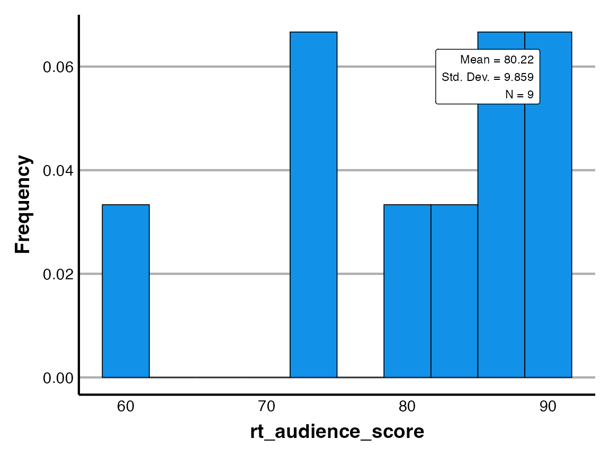
Legacy Style
spss_histogram(
superman,
variable = "clark_height_in",
version = "legacy",
fill_color = "#3E58AC"
)
#> Warning in ggplot2::annotate("label", x = x_pos, y = y_pos, label =
#> stats_label, : Ignoring unknown parameters: `label.size`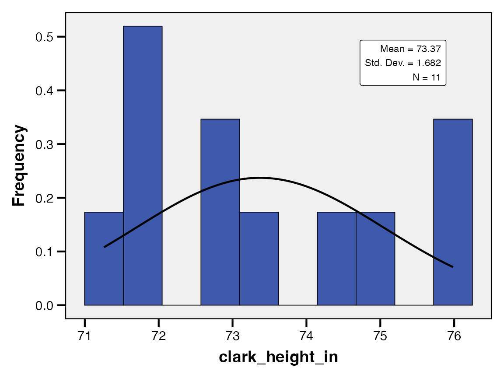
SPSS-Style Bar Chart
The spss_barchart() function creates frequency bar
charts for categorical variables:
spss_barchart(superman, "clark_grp")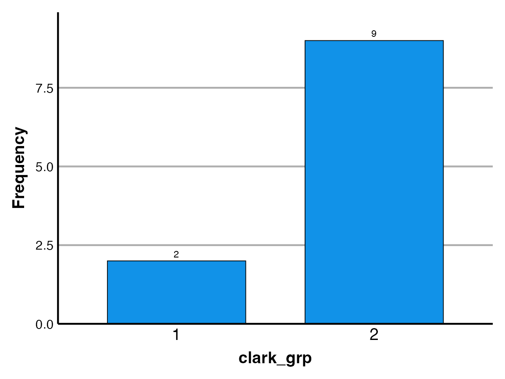
Customization
spss_barchart(
superman,
variable = "type",
show_counts = TRUE,
fill_color = "#9F1853",
version = "modern"
)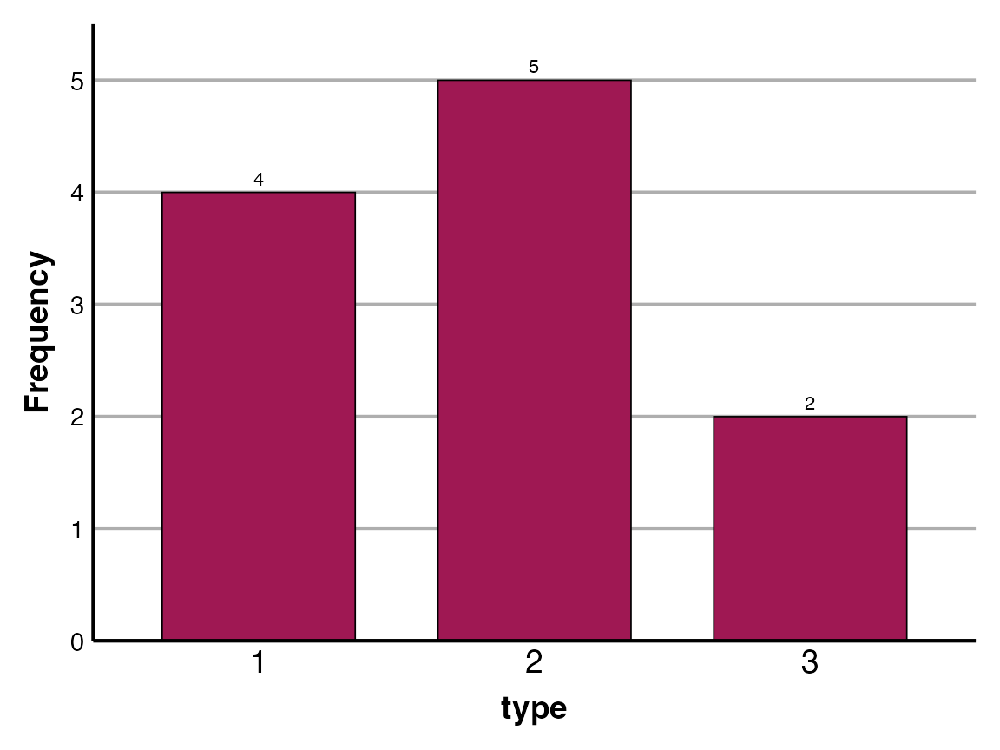
Without Count Labels
spss_barchart(
superman,
variable = "tomatometer",
show_counts = FALSE
)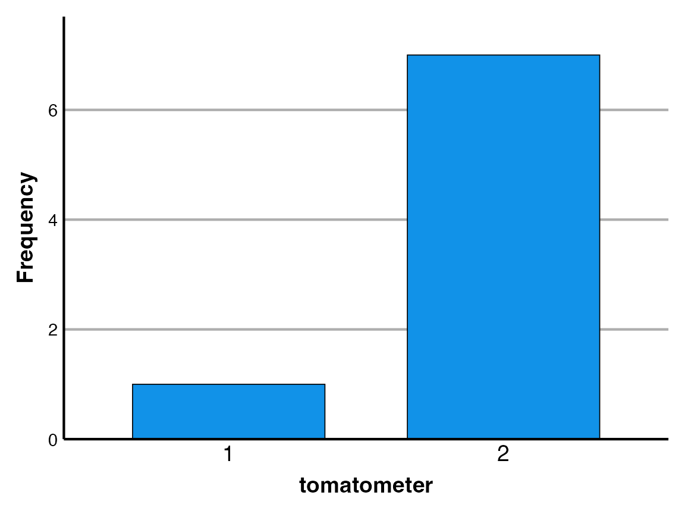
Saving Plots
Using spss_save_plot()
# Create a plot
p <- spss_histogram(superman, "clark_height_in")
# Save as PNG
spss_save_plot(p, "histogram.png", width = 6, height = 4.5, dpi = 150)Using ggplot2’s ggsave()
Since the functions return ggplot2 objects, you can also use
ggsave():
p <- spss_histogram(superman, "clark_height_in")
ggsave("histogram.pdf", p, width = 6, height = 4.5)Building Custom Plots
You can combine theme_SPSS() and the color scales with
any ggplot2 code:
Scatter Plot with Regression Line
ggplot(superman, aes(x = clark_height_in, y = rt_critics_score)) +
geom_point(color = "#1192E8", size = 2, alpha = 0.7) +
geom_smooth(method = "lm", color = "#FA4D56", se = TRUE, fill = "#FA4D56", alpha = 0.2) +
labs(
x = "Clark Height (inches)",
y = "Critics Score",
title = "Relationship Between Clark Height and Critics Score"
) +
theme_SPSS()
#> `geom_smooth()` using formula = 'y ~ x'
#> Warning: Removed 3 rows containing non-finite outside the scale range
#> (`stat_smooth()`).
#> Warning: Removed 3 rows containing missing values or values outside the scale range
#> (`geom_point()`).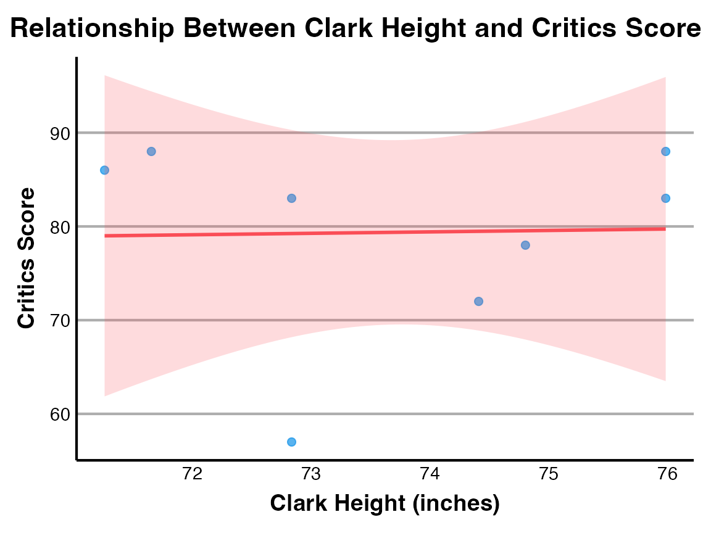
Grouped Box Plot
ggplot(superman, aes(x = factor(type), y = rt_critics_score, fill = factor(type))) +
geom_boxplot(alpha = 0.8) +
scale_fill_SPSS() +
labs(x = "Superman Type", y = "Critics Score") +
theme_SPSS(scale.x = "discrete") +
theme(legend.position = "none")
#> Warning: Removed 3 rows containing non-finite outside the scale range
#> (`stat_boxplot()`).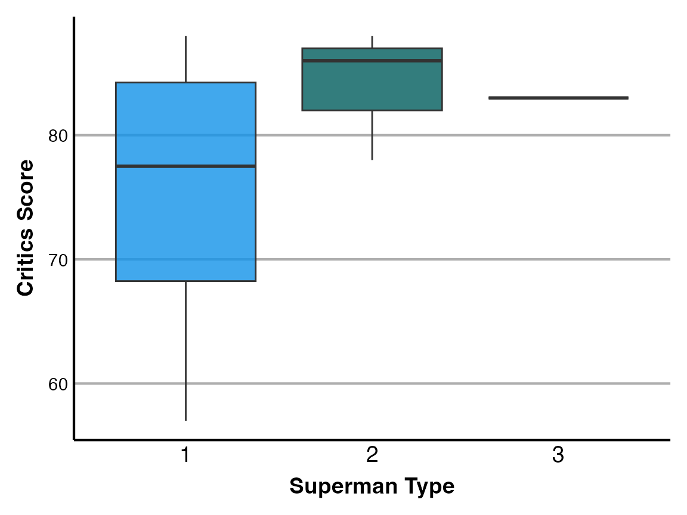
Faceted Plot
ggplot(superman, aes(x = rt_critics_score)) +
geom_histogram(bins = 10, fill = "#1192E8", color = "black", linewidth = 0.3) +
facet_wrap(~clark_grp) +
labs(x = "Critics Score", y = "Frequency") +
theme_SPSS()
#> Warning: Removed 3 rows containing non-finite outside the scale range
#> (`stat_bin()`).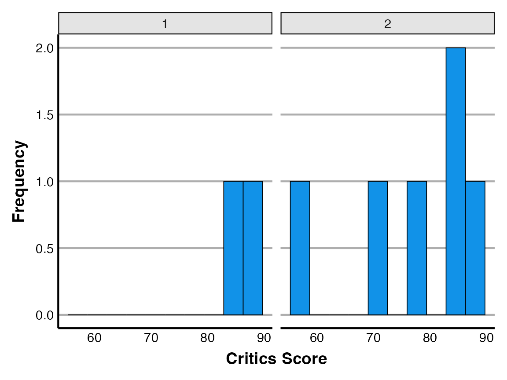
Number Formatting
Use number_SPSS() for axis labels without thousands
separators (matching SPSS defaults):
# Create data with large numbers
big_data <- data.frame(
x = c(1000, 5000, 10000, 25000),
y = c(100, 200, 150, 300)
)
ggplot(big_data, aes(x = x, y = y)) +
geom_point(size = 3, color = "#1192E8") +
scale_x_continuous(labels = number_SPSS) +
theme_SPSS()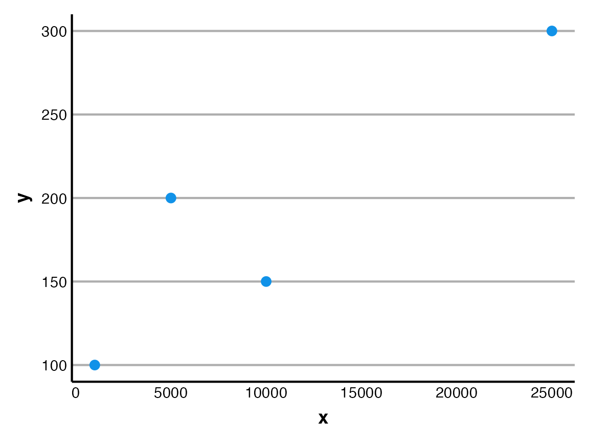
Theme Parameters Reference
| Parameter | Description | Default |
|---|---|---|
base_size |
Base font size (pt) | 14 |
base_family |
Font family | “sans” |
base_line_size |
Line width | 0.75 |
base_rect_size |
Rectangle border width | 0.75 |
version |
“modern” or “legacy” | “modern” |
scales |
“continuous” or “discrete” | “continuous” |
scale.x |
Override for x-axis | Same as scales
|
scale.y |
Override for y-axis | Same as scales
|